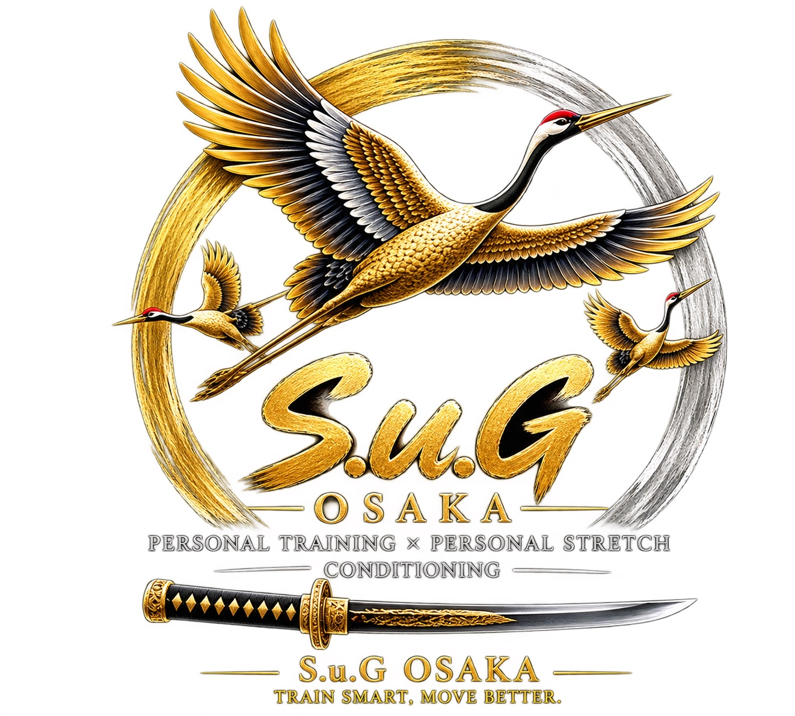
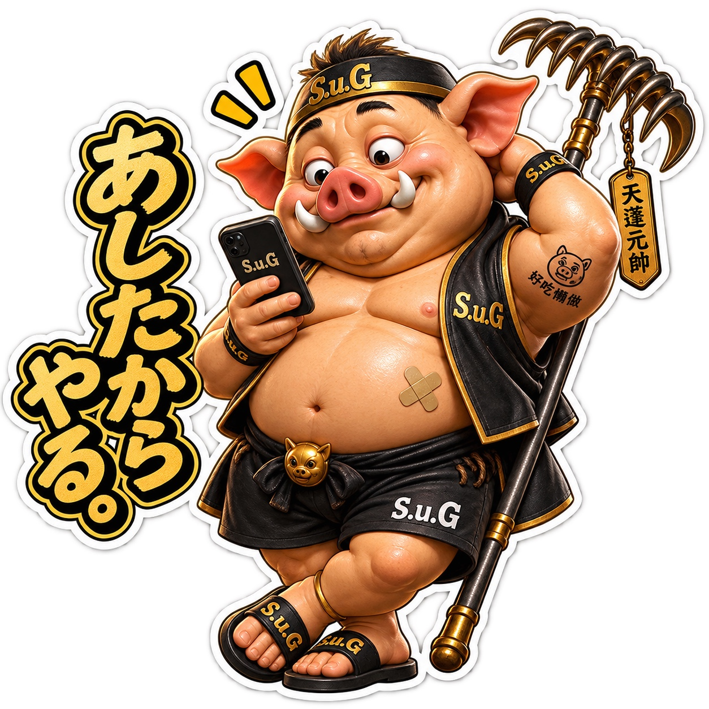
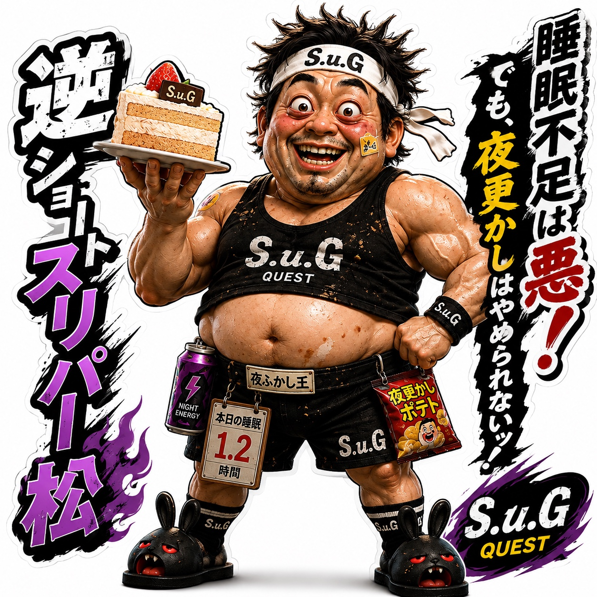
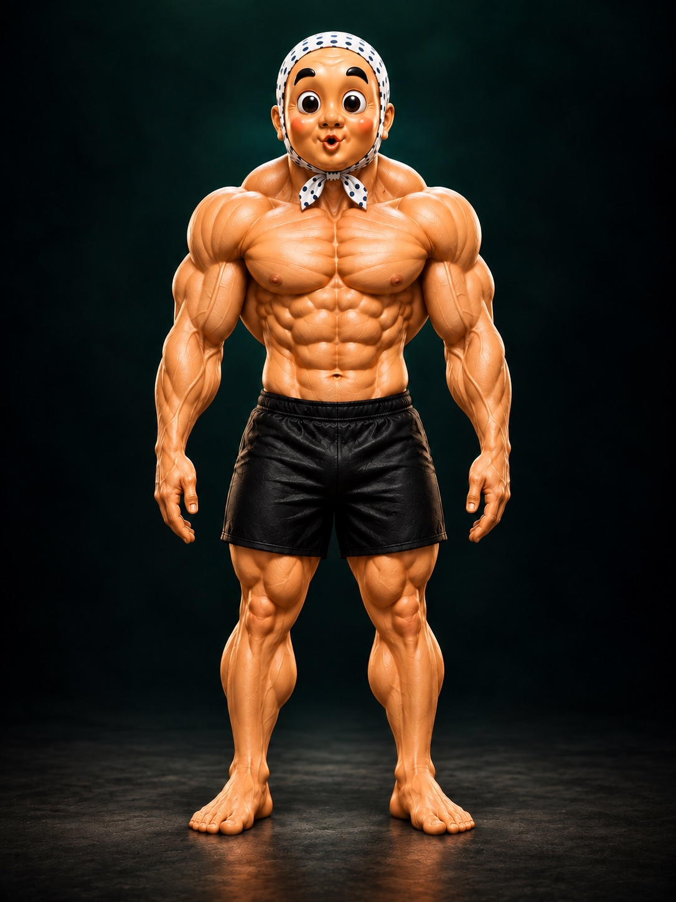
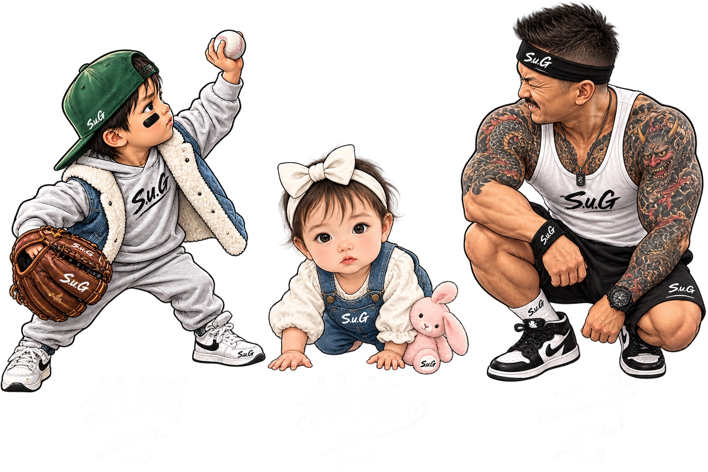

目標と、今日の状態から。
基本情報と今日の調子を記録しましょう。
目標：未設定自動提案は接続待ち
既存BODYの運動・記録を開く ↗
BODY歩いた量も、食べたものも、眠れた時間も。あなたの一日に合わせて。
基本情報と今日の調子を記録しましょう。
歩く・食べる・休む。できたことから記録しよう。
写真を選んで、料理と量を確認。無理なく、今日の記録へ。

食べたものを責めずに、今日の記録へ。
歩数と距離を、今日の活動につなげよう。
現在は手入力。GPS実測距離とHealthKitの歩数は、接続後に取得元と日時を表示します。
歩行とトレーニングを合わせて振り返り、睡眠・回復も含めて次の実践につなぎます。
歩行時間・強度の連携、重複集計の防止は組込み工程で対応。

そのまま記録して、今日の調子を確かめよう。
どこが気になりますか？

気になる動きを確認して、前後の変化を残そう。
一般的な確認・ケア情報と、自分の記録を分けて表示しています。痛みの原因を診断しません。
既存の身体チェックへ ↗
記録は誰かとの比較ではなく、自分の変化を見るために。
本人のポイントは未接続
歩行やトレーニングの実施をポイントに。対象サービスの割引へつなげます。
還元率・上限・対象サービスは未確定。候補画面では付与・消費・割引発行を行いません。
同じブラウザー・オリジンにある通常BODY記録を読み取り専用で表示します。ポイントの付与はしません。
このブラウザーの専用保存。JSONで別の独立領域へ引き継げます。クラウド同期は未接続。
この画面から出力したJSONを選んでください。今ある記録は上書きしません。
復元した記録を開いて続ける →